A GNSS multipath simulator for near-surface reflectometry and positioning applications.
The routines demonstrated here provide model counterparts to actual SNR observations. They require a priori information about the parameters affecting the amount of attenuation as well as group and phase delay exhibited by reflected signals, compared to the direct or line-of-sight signal. These parameters describe:
- the properties of target surface (geometry & composition),
- the measurement system characteristics (PRN modulation, receiver tracking algorithms, antenna radiation patterns), and
- the monitoring setup (the height of the antenna above the surface, as well as its orientation).
This demo itself is writen in MATLAB; you can see its souce code clicking here. We assume that the search path has already been modified as appropriate for your installation; otherwise, please search for do_addpath.m.
Contents
Defaults
A quick run can be performed using default settings in a single step:
snr_fwd();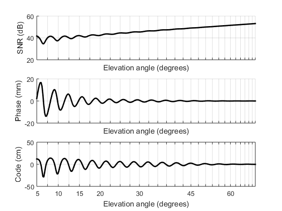
Default settings can be accessed in three easy steps:
sett = snr_settings(); setup = snr_setup (sett); result = snr_fwd (setup);
Now we will give an overview of each of the three previous steps. Later we will illustrate the most common modifications to the defaults.
We will save the default results for comparison, and will use an auxiliary plotting routine, snr_demo_plot2.
sett0 = sett; result0 = result;
Forward model run
Routine snr_fwd outputs a return variable containing the the model equivalent to SNR observations along with other observables:
result = snr_fwd (setup);
Its input argument is obtained as output from routine snr_setup, described next.
Forward model setup
setup = snr_setup (sett); disp(setup)
sat: [1x1 struct]
sfc: [1x1 struct]
ref: [1x1 struct]
ant: [1x1 struct]
opt: [1x1 struct]
bias: [1x1 struct]
sett: [1x1 struct]
It returns a structure with fields.
The first one, ref contains the definition of the reference system relating antenna and surface -- essentially the height of the antenna above the surface.
The one named sat is a sub-structure describing the satellite whose observations are being simulated. Essentially it defines how the satellite's azimuth and elevation angle vary over date/time.
The next variable, named sfc, describes the reflecting surface, including its geometry as well as its composition:
The variable ant describes the receiving antenna: its model, radiation pattern (gain and phase), and orientatio.
Finally, the variable opt contains general options.
The documentation for these can be accessed through the command doc snr_setup.
In practice we seldom modify setup manually, rather preferring to modify instead the input to routine snr_setup, structure sett, as returned by routine snr_settings.
Forward model settings
Routine snr_settings provides a data structure with default settings:
sett = snr_settings(); display(sett)
sett =
sat: [1x1 struct]
ref: [1x1 struct]
opt: [1x1 struct]
ant: [1x1 struct]
sfc: [1x1 struct]
bias: [1x1 struct]
Each of the sub-structures in sett describes one of the components that will be prepared by snr_setup and utilized by snr_fwd:
- sett.ref: reference system;
- sett.ant: antenna;
- sett.sfc: reflecting surface;
- sett.sat: satellite;
- sett.opt: general options.
The detailed documentation for these can be accessed in doc snr_settings. Fortunately, the majority of the settings usually can be ignored, because their default values are usually appropriate. Below we illustrate the settings most likely to be changed in practice.
General options
Among the general options, sett.opt, one can select which GNSS frequency is being simulated:
sett = snr_settings(); % Define first signal: sett.opt.freq_name = 'L2'; sett.opt.code_name = 'L2C'; setup = snr_setup (sett); result0 = snr_fwd (setup); % Define second signal: sett.opt.freq_name = 'L1'; sett.opt.code_name = 'C/A'; setup = snr_setup (sett); result = snr_fwd (setup); % Compare: snr_demo_plot2 (result, result0)
Warning: Pre-loaded antenna data not found.
For improved speed, please <a href="matlab: snr_setup_ant_preload(); ">click
here</a>;
to disable this warning message, <a href="matlab:
warning('off','snr:setup_ant_comp:noPre')">click here instead</a>.
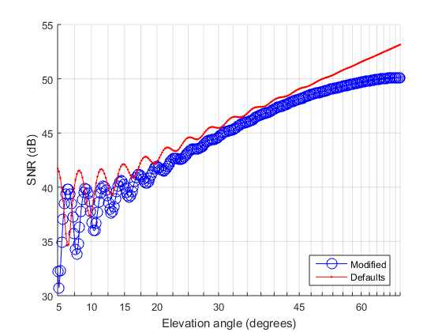 Notice the change in the modulation frequency of the SNR observations, as a consequence of the different carrier frequencies of the two signals.
Reference system
The vertical separation between antenna and surface is specified as follows:
sett = snr_settings(); % Define first case: sett.ref.height_ant = 1.5; % in meters setup = snr_setup (sett); result0 = snr_fwd (setup); % Define second case: sett.ref.height_ant = 2.5; % in meters setup = snr_setup (sett); result = snr_fwd (setup); % Compare: snr_demo_plot2 (result, result0)
Warning: Pre-loaded antenna data not found.
For improved speed, please <a href="matlab: snr_setup_ant_preload(); ">click
here</a>;
to disable this warning message, <a href="matlab:
warning('off','snr:setup_ant_comp:noPre')">click here instead</a>.

Notice again a change in the modulation frequency of the SNR observations, at this time a consequence of the different antenna heights, for a fixed electromagnetic frequency.
It should be noted that units are standardized across all routines:
- lengths, including height, wavelength, depth, thickness, are always given in meters;
- frequencies, such as electromagnetic propagation frequency, and also bandwidth, are always in hertz;
- angles, including azimuth and elevation angle as well as phase, are always in degrees (not radians);
Antenna orientation
Although the antenna is typically installed upright (i.e., with boresight facing zenith), sometimes it is intentionally tilted, for better reception of reflected signals; this can be achieved as follows:
sett = snr_settings(); sett.ref.dist_arp_pivot = 0; sett.ref.ignore_vec_apc_arp = true; warning('off', 'snr:snr_setup_origin:IgnoreVecApcArp') % Define first case: sett.ant.slope = 0; sett.ant.aspect = 0; sett.ant.axial = 0; setup = snr_setup (sett); result0 = snr_fwd (setup); % Define second case: sett.ant.slope = 90; % in degrees. sett.ant.aspect = midrange(result0.sat.azim); % facing the rising or setting sat. sett.ant.axial = 0; setup = snr_setup (sett); result = snr_fwd (setup); % Compare: snr_demo_plot2 (result, result0)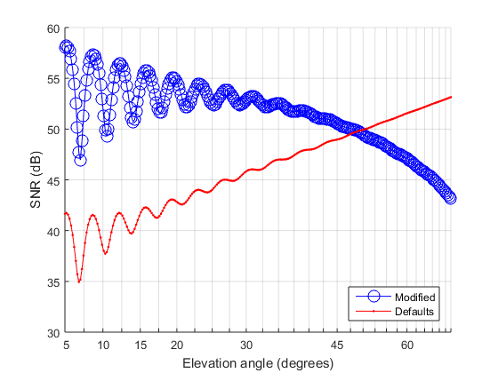
A value of sett.ant.slope = 0 means upright; only when the slope angle is non-zero is that the setting sett.ant.aspect has an effect: it dictates the azimuth faced by the antenna boresight. Finally, sett.ant.axial specifies one last rotation, around the antenna's own axis; usually it has a less dramatic effect, because typical GNSS antennas are designed to be omni-directional.
Normally antenna rotation would be influenced by the antenna model, because each model has a particular offset between its antenna phase center (APC) and antenna reference point (ARP) -- see graphs and links below for details. Here we have forced these offsets to be ignored, issuing sett.ref.ignore_vec_apc_arp = true.
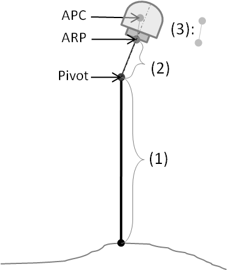
It should be clarified that the antenna height, sett.ref.height_ant -- (1) in the diagram -- refers to the pivot point, i.e., the topmost point on the antenna mount that remains unchanged to rotations. Then the lever arm length, sett.ref.dist_arp_pivot -- (2) in the diagram --, gives the pivot-ARP distance. The latter is to be added along the antenna axial direction to the ARP-APC vector offset -- (3) in the diagram -- before the total pivot-APC offset is rotated as per antenna orientation angles (axial, slope, and aspect).
Antenna model
Different antenna models yield slightly different SNR observations given the same reflecting surface and antenna setup:
sett = snr_settings(); sett.ref.ignore_vec_apc_arp = true; warning('off', 'snr:snr_setup_origin:IgnoreVecApcArp') % Define first case: sett.ant.model = 'TRM41249.00'; sett.ant.radome = 'NONE'; % @ NWOT setup = snr_setup (sett); result0 = snr_fwd (setup); % Define second case: sett.ant.model = 'TRM29659.00'; sett.ant.radome = 'SCIT'; % @ LOW3 setup = snr_setup (sett); result = snr_fwd (setup); % Compare: snr_demo_plot2 (result, result0)
Warning: Pre-loaded antenna data not found.
For improved speed, please <a href="matlab: snr_setup_ant_preload(); ">click
here</a>;
to disable this warning message, <a href="matlab:
warning('off','snr:setup_ant_comp:noPre')">click here instead</a>.
Warning: Pre-loaded antenna data not found.
For improved speed, please <a href="matlab: snr_setup_ant_preload(); ">click
here</a>;
to disable this warning message, <a href="matlab:
warning('off','snr:setup_ant_comp:noPre')">click here instead</a>.
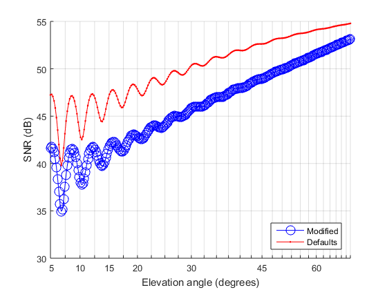 Antenna and radome identification follow the IGS naming conventions (see here). For example, TRM29659.00 stands for "Trimble L1/L2 Dorne Margolin element with chokerings". Beware that it is not uncommon to exist several versions of the same antenna type; e.g., both LEIAT504 and LEIAT504GG are Leica's "L1/L2 Dorne Margolin antenna with chokerings", although one is GPS-only while the other is GPS & GLONASS capable.
Results here reflect the difference in the antenna gain patterns. Again, normally they would also reflect ARP-APC offset particular to each antenna model, which are simply added to antenna height when it is not rotated. Here we have forced these offsets to be ignored, issuing sett.ref.ignore_vec_apc_arp = true. See graphs and links below for details.
/ ----------------------+--------------------- \ <-- 0.0714 L1
+ + + <-- 0.0682 L2
\ -------------------------------------------- /
\ /
\ /
\-----+-----/ <-- 0.0000 ARP=TOP -----
/ + \ <-- 0.128 L2
| + | <-- 0.110 L1
+--------------------------------------------------+ <-- 0.102 TCR
| |
| |
| |
| |
+-+--------------------------------------------------+-+ <-- 0.038
+-------------------+-------------+--------------------+ <-- 0.035 BCR
| |
=| |
+------x------+ <-- 0.000 BPA=ARPSurface tilting
Just like the antenna's slope & aspect angles, we can also define surface's slope & aspect (where the latter defines the azimuth being faced by the surface):
sett = snr_settings(); sett.sfc.fnc_snr_setup_sfc_geometry = @snr_setup_sfc_geometry_tilted; % Define first case: sett.sfc.slope = 0; sett.sfc.aspect = 0; setup = snr_setup (sett); result0 = snr_fwd (setup); % Define second case: sett.sfc.slope = 15; sett.sfc.aspect = midrange(result.sat.azim) - 90; setup = snr_setup (sett); result = snr_fwd (setup); % Compare: snr_demo_plot2 (result, result0)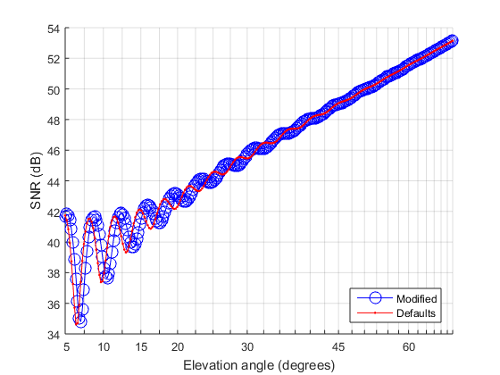
The effect of slope is very much aspect-dependent; when the surface faces an azimuth opposite to the satellite's, the reflection will no longer be visible if the satellite's elevation angle is smaller than the surface's slope:
sett.sfc.slope = 10; sett.sfc.aspect = midrange(result.sat.azim) + 180; setup = snr_setup (sett); result = snr_fwd (setup); % Compare: snr_demo_plot2 (result, result0); %ylim([-4,+14])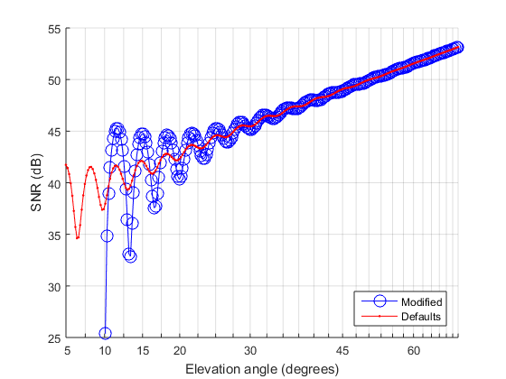
Surface undulations
The support for surface undulations in the forward model is to be demonstrated in future revisions of this document.
Surface roughness
Roughness is specified by the surface height standard deviation with respect to a mean or trend surface:
sett = snr_settings(); % Define first case: sett.sfc.height_std = 0; setup = snr_setup (sett); result0 = snr_fwd (setup); % Define second case: sett.sfc.height_std = 25e-2; % in meters setup = snr_setup (sett); result = snr_fwd (setup); % Compare: snr_demo_plot2 (result, result0)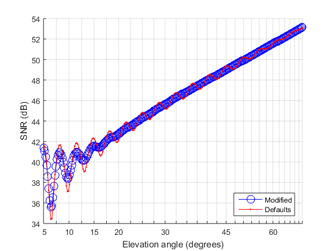
Random roughness diminishes the coherently scattered power, thus causing a decrease in the magnitude of multipath modulation. The effect is more pronounced at higher elevation angles.
Material composition
Material composition is a medium property and is held as one of the surface settings, sett.sfc:
sett = snr_settings(); % Define first case: sett.sfc.fnc_snr_setup_sfc_material = @snr_setup_sfc_material_halfspaces; sett.sfc.material_top = 'air'; sett.sfc.material_bottom = 'wet soil fixed'; setup = snr_setup (sett); result0 = snr_fwd (setup); % Define second case: sett.sfc.material_bottom = 'dry soil fixed'; setup = snr_setup (sett); result = snr_fwd (setup); % Compare: snr_demo_plot2 (result, result0)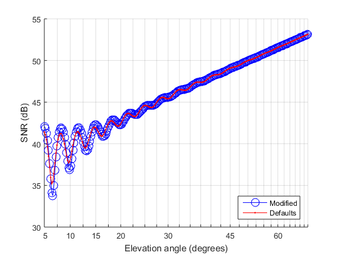
Here we see how soil moisture produces a change in both phase and amplitude of the multipath modulation.
Even assuming a homogeneous or uniform medium (also known as half-space), there are several materials to choose:
get_permittivity('list') % Please see |doc get_permittivity| for input and output syntax.
ans =
'vacuum'
'air'
'grass'
'asphalt'
'polystyrene'
'styrofoam'
'dry snow fixed'
'dry snow'
'soil'
'soil default'
'seawater variable'
'seawater'
'wet soil'
'freshwater'
'dry/wet soil'
'dry ground'
'concrete'
'ice'
'steel'
'zinc'
'aluminum'
'copper'
'perfect electric conductor'
Some materials are predefined, such as 'wet soil fixed' and 'dry soil fixed' above, and also 'dry snow fixed', in which cases sett.sfc.material_bottom holds only their names. Other materials require certain parameter values as additional input; in such cases sett.sfc.material_bottom is a structure, as follows:
sett = snr_settings(); % Define first case: sett.sfc.fnc_snr_setup_sfc_material = @snr_setup_sfc_material_halfspaces; sett.sfc.material_top = 'air'; sett.sfc.material_bottom = struct(); sett.sfc.material_bottom.name = 'dry snow'; sett.sfc.material_bottom.density = 0.5; sett.sfc.material_bottom.temperature = -10; setup = snr_setup (sett); result0 = snr_fwd (setup); % Define second case: sett.sfc.material_bottom = struct(); sett.sfc.material_bottom.name = 'soil'; sett.sfc.material_bottom.type = 'sandy loam'; sett.sfc.material_bottom.moisture = 0.25; setup = snr_setup (sett); result = snr_fwd (setup); % Compare: snr_demo_plot2 (result, result0)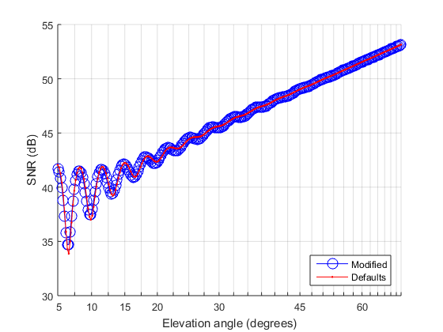
Material stratification/layering
A separate demo/tutorial is kept in snr_demo_layer, or here
Satellite
We can define the simulation independent variables by changing the structure sett.sat:
sett.sat = struct(); sett.sat.num_obs = 100; % number of observations sett.sat.elev_lim = [2.5, 90]; % elevation angle limits (min, max) sett.sat.azim_lim = 0; % azimuth limits (vector) or constant value (scalar)
Now compare the results:
setup = snr_setup (sett); result = snr_fwd (setup); snr_demo_plot2 (result, result0)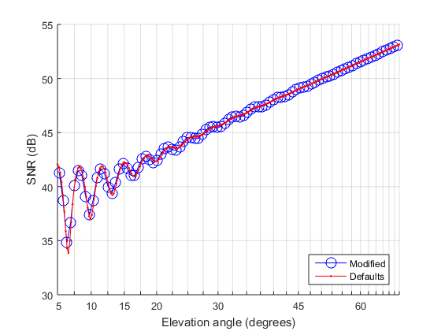
Instead of defining the limits and number of observations, we can specify exactly the satellite direction at which synthetic observations will be simulated:
sett.sat = struct(); sett.sat.elev = [5; 7; 10]; sett.sat.azim = 180; setup = snr_setup (sett); result = snr_fwd (setup); snr_demo_plot2 (result, result0)
This is useful if you have measured observations, in which case you could do something like this:
sett.sat = struct(); sett.sat.elev = load('elev.txt'); sett.sat.azim = load('azim.txt');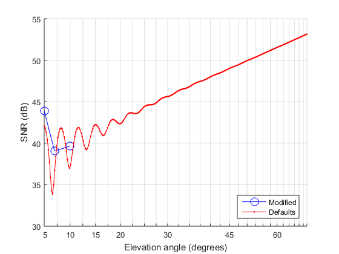
Carrier-phase and pseudorange multipath errors
Routine snr_fwd offers more than one output variable:
sett = snr_settings(); setup = snr_setup (sett); result = snr_fwd (setup);
The third return variable, carrier_error, gives the carrier-phase multipath error, and the fourth one, code_error, the code or pseudorange multipath error; these complement snr_db is characterizing the impact of multipath on GNSS observations:
snr_demo_plot_error (result)
For small-delay reflections, typical near grazing incidence on horizontal surfaces (but not necessarily so on undulated surfaces), code modulation can be disabled without significant accuracy degradation in either SNR or carrier-phase error, if we are not interested in the code error itself:
sett.opt.dsss.disable = true; setup = snr_setup (sett); result = snr_fwd (setup); snr_demo_plot_error (result)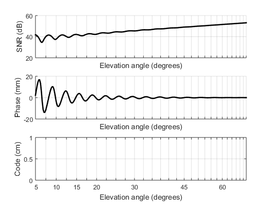
The return variable, result, contains intermediary results employed internally by snr_fwd:
display(result)
result =
direct: [1x1 struct]
reflected: [1x1 struct]
incident: [1x1 struct]
pre: [1x1 struct]
phasor_direct: [250x1 double]
phasor_reflected: [250x1 double]
delay_reflected: [250x1 double]
doppler_reflected: [250x1 double]
phasor_bias_direct: 1
phasor_bias_reflected: 1
delay_bias: 0
delay_composite: [250x1 double]
phasor_composite: [250x1 double]
delay_direct: 0
delay_error: [250x1 double]
delay_interf: [250x1 double]
phasor_error: [250x1 double]
phasor_interf: [250x1 double]
power_composite: [250x1 double]
carrier_error: [250x1 double]
code_error: [250x1 double]
snr_db: [250x1 double]
power_loss: [250x1 double]
geom: [1x1 struct]
sat: [1x1 struct]
This is useful if you want detailed information about specific aspects of the model. The reflection geometry (positions and directions) is described in the sub-structure extra.geom:
disp(result.geom)
num_dirs: 250
num_reflections: 1
direct: [1x1 struct]
reflections: [1x1 struct]
reflection: [1x1 struct]
%close all %#ok<*NOPTS,*NASGU>